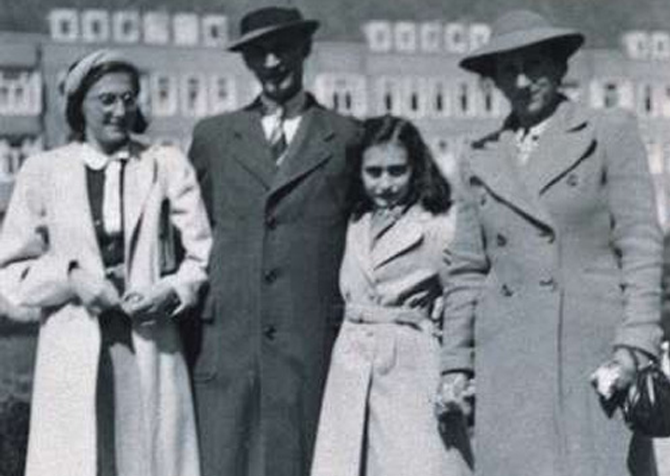

Ana y Margot.
Ana Frank nació en Frankfurt, Alemania, el 12 de junio de 1929. Su familia estaba compuesta por su madre Edith, su padre Otto, su hermana mayor, Margot, y ella. Otto Frank fue un empresario y aficionado a la fotografía que en 1933, tras el ascenso del nazismo al poder, trasladó a su familia a Amsterdam, Holanda.
Allí Margot y Ana crecieron y se educaron en la escuela pública.
Tenían muchas amigas con las que compartían juegos y paseos.
El 10 de mayo de 1940 Alemania invadió Holanda.
Los derechos de los judíos fueron paulatinamente limitados.
La comunidad judía sufrió un aislamiento total.